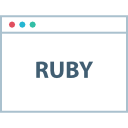
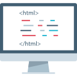
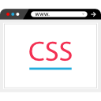

Sociologue, expert en Population et Développement. Blogueur voyages à ApuntesdeViajes.com. Développeur web en formation #LeWagon #Voyages #WebDev
Portfolio|  |
Ruby est un langage open-source dynamique qui met l'accent sur la simplicité et la productivité. |
|  |
HTML, l’HyperText Markup Language, est le format de données conçu pour représenter les pages web. |
|  |
CSS, Les feuilles de style en cascade, de l'anglais Cascading Style Sheets, forment un langage informatique qui décrit la présentation des documents HTML et XML. |